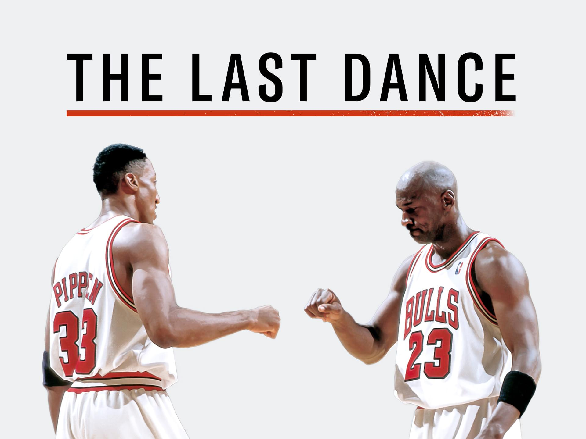

Sinopse
"The Last Dance" é um documentário da Netflix que retrata a incrível jornada do Chicago Bulls durante a era de ouro da NBA, focando especialmente em Michael Jordan.
"The Last Dance" é um documentário da Netflix que retrata a incrível jornada do Chicago Bulls durante a era de ouro da NBA, focando especialmente em Michael Jordan.
Dirigido por: Jason Hehir
Estreia: 15 de abril de 2020

Michael Jordan
Dennis Rodman
Scottie Pippen
Phil Jackson